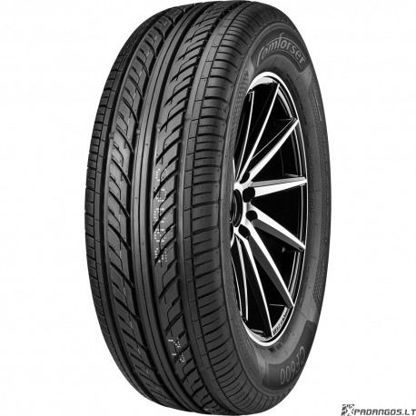

Welcome to automobilių-padangos
Automobilių padangos | Autoplius.lt
2020.10.28 09:17
Žinutės Įsiminti Paieškos Peržiūrėti skelbimai Prisijungti + Dėti skelbimą Skelbimai Nauji auto Auto paskola Ket Straipsniai Apžvalgos LT RU EN LV
Automobilių padangos (34566)
Sezoniškumas Žieminės (18331) » Vasarinės (12158) » Universaliosios (4035) » Naujos/Naudotos Naujos (7673) Naudotos (26893) Ypatumai Šalis Lietuva (32153) Latvija (2413) Daugiau Pardavėjo tipas Privatus (3032) Verslas (19483) Skelbimas ne senesnis nei Vienos dienos (25753) Vienos dienos (tik nauji) (324) Trijų dienų (26792) Savaitės (29336) Dviejų savaičių (30865) Mėnesio (33427) Dviejų mėnesių (33961)Jus domina parduodamos automobilių padangos? Parduodamų automobilių padangų skelbimai pateikiami sąraše. Populiariausių parduodamų automobilių padangų tipai pateikiami kairėje pusėje. Parduodamų automobilių padangų kainos, nuotraukos ir kita informacija nuolatos atnaujinama. Automobilių padangų pardavimas autoplius.lt portale - geriausias sprendimas! Naujiena Naujos padangos internetu Palyginkite padangų kainas Lietuvos el. parduotuvėse ir išsirinkite. Išsirinkite Atnaujintas 8 Continental Winter TS850 8mm, žieminės 205/55 R16 40 € / vnt. Plotis: 205 Aukštis: 55 Skersmuo: R16 Naudotos Likutis: 95% 4 vnt Kaunas Įsiminti Atnaujintas 8 Michelin Alpin4 8mm 95%, žieminės 215/60 R16 40 € / vnt. Plotis: 215 Aukštis: 60 Skersmuo: R16 Naudotos Likutis: 95% 4 vnt Kaunas Įsiminti Atnaujintas 8 Continental Winter TS830P 8mm 2019m, žieminės 205/60 R16 43 € / vnt. Plotis: 205 Aukštis: 60 Skersmuo: R16 Naudotos Likutis: 95% 4 vnt Kaunas Įsiminti Atnaujintas 8 Bridgestone Blizzak LM001 8mm 2018m, žieminės 215/60 R16 45 € / vnt. Plotis: 215 Aukštis: 60 Skersmuo: R16 Naudotos Likutis: 95% 4 vnt Kaunas Įsiminti Atnaujintas 8 Dunlop Winter Sport5 8mm 2019m, žieminės 215/60 R16 45 € / vnt. Plotis: 215 Aukštis: 60 Skersmuo: R16 Naudotos Likutis: 95% 4 vnt Kaunas Įsiminti Atnaujintas 8 Michelin Alpin5 8-9mm 95% 2018m, žieminės 215/60 R16 45 € / vnt. Plotis: 215 Aukštis: 60 Skersmuo: R16 Naudotos Likutis: 95% 4 vnt Kaunas Įsiminti Atnaujintas 8 Michelin Alpin5 8mm 95% 2019m, žieminės 205/60 R16 45 € / vnt. Plotis: 205 Aukštis: 60 Skersmuo: R16 Naudotos Likutis: 95% 4 vnt Kaunas Įsiminti Atnaujintas 8 Pirelli Sotto3 8-9mm 2019m 95%, žieminės 215/60 R16 45 € / vnt. Plotis: 215 Aukštis: 60 Skersmuo: R16 Naudotos Likutis: 95% 4 vnt Kaunas Įsiminti Atnaujintas 8 Dunlop Winter Sport5 8mm 2019m, žieminės 205/60 R16 48 € / vnt. Plotis: 205 Aukštis: 60 Skersmuo: R16 Naudotos Likutis: 90% 4 vnt Kaunas Įsiminti Atnaujintas 8 Pirelli SottoZero3 8mm 2019m, žieminės 205/60 R16 49 € / vnt. Plotis: 205 Aukštis: 60 Skersmuo: R16 Naudotos Likutis: 95% 4 vnt Kaunas Įsiminti 1 2 3 4 5 6 Kitas Partnerių pasiūlymai APD servisas
Visų tipų kapitalinis automatinių pavarų dėžių remontas. 6 mėn. garantija.
www.apdservisas.lt
Растаможка, доставка б\у деталей в Россия до 23т. Машинокомплекты из Англии.тел: +37061463722
continentaltransport.ru
Mobilioji versija Forumas Sprendimai verslui Apie kompaniją Kontaktai Naudingos nuorodos Visi skelbimai , Naudoti automobiliai , Nauji automobiliai , Mikroautobusai , Autobusai , Sunkvežimiai , Motociklai , Automobilių dalys , Mikroautobusų, autobusų dalys , Sunkvežimių dalys , Motociklų dalių pardavimas , Padangos, ratlankiai , Automobiliai nuomai , Mikroautobusai, autobusai nuomai , Sunkvežimiai nuomai Pagalba ir informacija: tel.: +370 606 355 63 D.U.K. Taisyklės Privatumo politika Klientų aptarnavimas: rašykite čia 2003-2020 © UAB „Diginet LTU“ Skelbiu.lt Aruodas.lt Kainos.lt Paslaugos.lt Cvbankas.lt D I G I N E T Svetainėje naudojami slapukai, kurie padeda užtikrinti jums teikiamų paslaugų kokybę. Tęsdami naršymą, jūs sutinkate su autoplius.lt slapukų politika. Daugiau apie slapukus. Sutinku